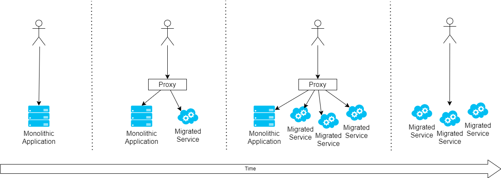

Strangler Pattern
This pattern is used to migrate functionality from an older app to a new one. Typically, this is done for a monolith to microservices model, but works for any app.
Pattern Overview
Replacing a large monolithic system is complex and risky. The strangler pattern builds new functionality using modern design patterns alongside the monolith. A proxy is used to integrate the user experience and make sure the aligned application makes sense to end users. Over time the monolith is slowly broken down.

Inspired by the Australian Strangler Fig Tree, which roots in the upper branches and growns down and around the tree, eventually taking root and destroying the original host tree.
Illustration
It is important that the support systems put inplace to support the transition are taken out.

The first sep shows the monolith, then a companion service is added alongside, behind a proxy. The next step adds more services, transitioning over to the new model. The last step, shows the monolith being removed, along with the proxy.
Benefits of this pattern
- Provides a way to scale a solution over multiple dimensions.
- Delivers gradual value over time, with lower risk than a rewrite.
- Supports and allows for rollback.
- Uses versioned APIs, to reduce need for collaboration.
- Supports legacy integrations.
Drawbacks to this pattern
- Potential for increased latency because of new service dependencies.
- Additional proxy decreases availability through multiplicative failure effect.
When to use this pattern
- Use the strangler for versioning and migration of services.
- Use an existing proxy, such as NGinx, as scaffolding during the migration.
- Manage the service rules during migration.
- Remove rules as no longer needed and decommision the proxy when done.
When to avoid this pattern
- If you have to add a facade, then don't also add a proxy as it increases the call depth and hits latency poorly.
- If latency is a concern, this won't help in the interim.
Approach
You can implement this pattern in two seperate ways, scaling along the service domains, or between the new and old services. Ideally, both together works well.
- Scaling along the service domains allows new services to be stood up and integrated.
- Scaling alongside the existing services allows for rollback and A/B testing between the new and old services, by sending a portion of calls to the new service.
Scaling along both these axis allows the target state to scale effectively.
Assumptions
References